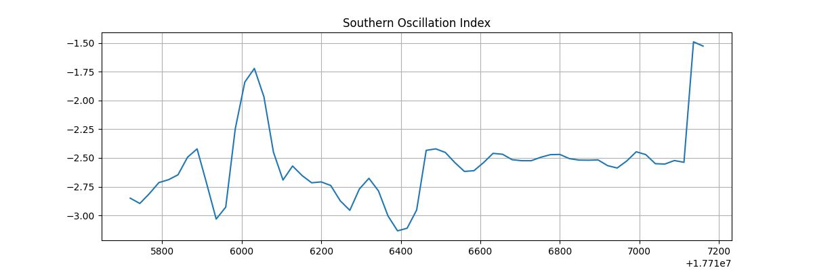

Note
Go to the end to download the full example code.
Statistical Inference#
Simple seasonal statistic inference workflow.
This example will demonstrate how to run a simple inference workflow to generate a forecast and then to save a statistic of that data. There are a handful of built-in statistics available in earth2studio.statistics, but here we will demonstrate how to define a custom statistic and run inference.
In this example you will learn:
How to instantiate a built in prognostic model
Creating a data source and IO object
Create a custom statistic
Running a simple built in workflow
Post-processing results
# /// script
# dependencies = [
# "earth2studio[pangu,statistics] @ git+https://github.com/NVIDIA/earth2studio.git",
# "matplotlib",
# ]
# ///
Creating a Statistical Workflow#
Start with creating a simple inference workflow to use. We encourage
users to explore and experiment with their own custom workflows that borrow ideas from
built in workflows inside earth2studio.run or the examples.
Creating our own generalizable workflow to use with statistics is easy when we rely on the component interfaces defined in Earth2Studio (use dependency injection). Here we create a run method that accepts the following:
time: Input list of datetimes / strings to run inference for
nsteps: Number of forecast steps to predict
prognostic: Our initialized prognostic model
statistic: our custom statistic
data: Initialized data source to fetch initial conditions from
io: IOBackend
We do not run an ensemble inference workflow here, even though it is common for statistical inference. See ensemble examples for details on how to extend this example for that purpose.
import os
os.makedirs("outputs", exist_ok=True)
from dotenv import load_dotenv
load_dotenv() # TODO: make common example prep function
from datetime import datetime
import numpy as np
import pandas as pd
from loguru import logger
from tqdm import tqdm
from earth2studio.data import DataSource, fetch_data
from earth2studio.io import IOBackend
from earth2studio.models.px import PrognosticModel
from earth2studio.statistics import Statistic
from earth2studio.utils.coords import map_coords
from earth2studio.utils.time import to_time_array
logger.remove()
logger.add(lambda msg: tqdm.write(msg, end=""), colorize=True)
def run_stats(
time: list[str] | list[datetime] | list[np.datetime64],
nsteps: int,
nensemble: int,
prognostic: PrognosticModel,
statistic: Statistic,
data: DataSource,
io: IOBackend,
) -> IOBackend:
"""Simple statistics workflow
Parameters
----------
time : list[str] | list[datetime] | list[np.datetime64]
List of string, datetimes or np.datetime64
nsteps : int
Number of forecast steps
nensemble : int
Number of ensemble members to run inference for.
prognostic : PrognosticModel
Prognostic models
statistic : Statistic
Custom statistic to compute and write to IO.
data : DataSource
Data source
io : IOBackend
IO object
Returns
-------
IOBackend
Output IO object
"""
logger.info("Running simple statistics workflow!")
# Load model onto the device
device = torch.device("cuda" if torch.cuda.is_available() else "cpu")
logger.info(f"Inference device: {device}")
prognostic = prognostic.to(device)
# Fetch data from data source and load onto device
time = to_time_array(time)
x, coords = fetch_data(
source=data,
time=time,
lead_time=prognostic.input_coords()["lead_time"],
variable=prognostic.input_coords()["variable"],
device=device,
)
logger.success(f"Fetched data from {data.__class__.__name__}")
# Set up IO backend
total_coords = coords.copy()
output_coords = prognostic.output_coords(prognostic.input_coords())
total_coords["lead_time"] = np.asarray(
[output_coords["lead_time"] * i for i in range(nsteps + 1)]
).flatten()
# Remove reduced dimensions from statistic
for d in statistic.reduction_dimensions:
total_coords.pop(d, None)
io.add_array(total_coords, str(statistic))
# Map lat and lon if needed
x, coords = map_coords(x, coords, prognostic.input_coords())
# Create prognostic iterator
model = prognostic.create_iterator(x, coords)
logger.info("Inference starting!")
with tqdm(total=nsteps + 1, desc="Running inference") as pbar:
for step, (x, coords) in enumerate(model):
s, coords = statistic(x, coords)
io.write(s, coords, str(statistic))
pbar.update(1)
if step == nsteps:
break
logger.success("Inference complete")
return io
Set Up#
With the statistical workflow defined, we now need to create the individual components.
We need the following:
Prognostic Model: Use the built in Pangu 24 hour model
earth2studio.models.px.Pangu24.statistic: We define our own statistic: the Southern Oscillation Index (SOI).
Datasource: Pull data from the GFS data api
earth2studio.data.GFS.IO Backend: Save the outputs into a NetCDF4 store
earth2studio.io.NetCDF4Backend.
from collections import OrderedDict
import fsspec
import numpy as np
import torch
from earth2studio.data import GFS
from earth2studio.io import NetCDF4Backend
from earth2studio.models.px import Pangu24
from earth2studio.utils.type import CoordSystem
# Load the default model package which downloads the check point from NGC
package = Pangu24.load_default_package()
model = Pangu24.load_model(package)
# Create the data source
data = GFS()
# Create the IO handler, store in memory
io = NetCDF4Backend(
file_name="outputs/soi.nc",
backend_kwargs={"mode": "w"},
)
# Create the custom statistic
class SOI:
"""Custom metric calculation the Southern Oscillation Index.
SOI = ( standardized_tahiti_slp - standardized_darwin_slp ) / soi_normalization
soi_normalization = std( historical ( standardized_tahiti_slp - standardized_darwin_slp ) )
standardized_*_slp = (*_slp - climatological_mean_*_slp) / climatological_std_*_slp
Note
----
__str__
Name that will be applied to the output of this statistic, primarily for IO purposes.
reduction_dimensions
Dimensions that this statistic reduces over. This is used to help automatically determine
the output coordinates, primarily used for IO purposes.
"""
def __str__(self) -> str:
return "soi"
def __init__(
self,
):
# Read in Tahiti and Darwin SLP data
url = "https://data.longpaddock.qld.gov.au/SeasonalClimateOutlook/SouthernOscillationIndex/SOIDataFiles/DailySOI1933-1992Base.txt"
with fsspec.open(url, "r") as f:
ds = pd.read_csv(f, sep=r"\s+")
dates = pd.date_range("1999-01-01", freq="d", periods=len(ds))
ds["date"] = dates
ds = ds.set_index("date")
ds = ds.drop(["Year", "Day", "SOI"], axis=1)
ds = ds.rolling(30, min_periods=1).mean().dropna()
self.climatological_means = torch.tensor(
ds.groupby(ds.index.month).mean().to_numpy(), dtype=torch.float32
)
self.climatological_std = torch.tensor(
ds.groupby(ds.index.month).std().to_numpy(), dtype=torch.float32
)
standardized = ds.groupby(ds.index.month).transform(
lambda x: (x - x.mean()) / x.std()
)
diff = standardized["Tahiti"] - standardized["Darwin"]
self.normalization = torch.tensor(
diff.groupby(ds.index.month).std().to_numpy(), dtype=torch.float32
)
self.tahiti_coords = {
"variable": np.array(["msl"]),
"lat": np.array([-17.65]),
"lon": np.array([210.57]),
}
self.darwin_coords = {
"variable": np.array(["msl"]),
"lat": np.array([-12.46]),
"lon": np.array([130.84]),
}
self.reduction_dimensions = list(self.tahiti_coords)
def __call__(
self, x: torch.Tensor, coords: CoordSystem
) -> tuple[torch.Tensor, CoordSystem]:
"""Computes the SOI given an input.
coords must be a superset of both
tahiti_coords = {
'variable': np.array(['msl']),
'lat': np.array([-17.65]),
'lon': np.array([210.57])
}
and
darwin_coords = {
'variable': np.array(['msl']),
'lat': np.array([-12.46]),
'lon': np.array([130.84])
}
So make sure that the model chosen predicts the `msl` variable.
Parameters
----------
x : torch.Tensor
Input tensor
coords : CoordSystem
coordinate system belonging to the input tensor.
Returns
-------
tuple[torch.Tensor, CoordSystem]
Returns the SOI and appropriate coordinate system.
"""
tahiti, _ = map_coords(x, coords, self.tahiti_coords)
darwin, _ = map_coords(x, coords, self.darwin_coords)
tahiti = tahiti.squeeze(-3, -2, -1) / 100.0
darwin = darwin.squeeze(-3, -2, -1) / 100.0
output_coords = OrderedDict(
{k: v for k, v in coords.items() if k not in self.reduction_dimensions}
)
# Get time coordinates
times = coords["time"].reshape(-1, 1) + coords["lead_time"].reshape(1, -1)
months = torch.broadcast_to(
torch.as_tensor(
[pd.Timestamp(t).month for t in times.flatten()],
device=tahiti.device,
dtype=torch.int32,
).reshape(times.shape),
tahiti.shape,
)
cm = self.climatological_means.to(tahiti.device)
cs = self.climatological_std.to(tahiti.device)
norm = self.normalization.to(tahiti.device)
tahiti_std_anomaly = (tahiti - cm[months, 0]) / cs[months, 0]
darwin_std_anomaly = (tahiti - cm[months, 1]) / cs[months, 1]
return (tahiti_std_anomaly - darwin_std_anomaly) / norm[months], output_coords
soi = SOI()
Execute the Workflow#
With all components initialized, running the workflow is a single line of Python code. Workflow will return the provided IO object back to the user, which can be used to then post process. Some have additional APIs that can be handy for post-processing or saving to file. Check the API docs for more information. We simulate a trajectory of 60 time steps, or 2 months using Pangu24
nsteps = 60
nensemble = 1
io = run_stats(["2022-01-01"], nsteps, nensemble, model, soi, data, io)
2026-03-24 22:35:51.734 | INFO | __main__:run_stats:125 - Running simple statistics workflow!
2026-03-24 22:35:51.734 | INFO | __main__:run_stats:128 - Inference device: cuda
Fetching GFS data: 0%| | 0/69 [00:00<?, ?it/s]
2026-03-24 22:36:02.369 | DEBUG | earth2studio.data.gfs:fetch_array:386 - Fetching GFS grib file: noaa-gfs-bdp-pds/gfs.20220101/00/atmos/gfs.t00z.pgrb2.0p25.f000 279544311-846529
Fetching GFS data: 0%| | 0/69 [00:00<?, ?it/s]
2026-03-24 22:36:02.383 | DEBUG | earth2studio.data.gfs:fetch_array:386 - Fetching GFS grib file: noaa-gfs-bdp-pds/gfs.20220101/00/atmos/gfs.t00z.pgrb2.0p25.f000 341434010-930385
Fetching GFS data: 0%| | 0/69 [00:00<?, ?it/s]
2026-03-24 22:36:02.396 | DEBUG | earth2studio.data.gfs:fetch_array:386 - Fetching GFS grib file: noaa-gfs-bdp-pds/gfs.20220101/00/atmos/gfs.t00z.pgrb2.0p25.f000 243604169-577867
Fetching GFS data: 0%| | 0/69 [00:00<?, ?it/s]
2026-03-24 22:36:02.408 | DEBUG | earth2studio.data.gfs:fetch_array:386 - Fetching GFS grib file: noaa-gfs-bdp-pds/gfs.20220101/00/atmos/gfs.t00z.pgrb2.0p25.f000 191217112-908803
Fetching GFS data: 0%| | 0/69 [00:00<?, ?it/s]
2026-03-24 22:36:02.420 | DEBUG | earth2studio.data.gfs:fetch_array:386 - Fetching GFS grib file: noaa-gfs-bdp-pds/gfs.20220101/00/atmos/gfs.t00z.pgrb2.0p25.f000 335526427-838455
Fetching GFS data: 0%| | 0/69 [00:00<?, ?it/s]
2026-03-24 22:36:02.433 | DEBUG | earth2studio.data.gfs:fetch_array:386 - Fetching GFS grib file: noaa-gfs-bdp-pds/gfs.20220101/00/atmos/gfs.t00z.pgrb2.0p25.f000 238232118-730356
Fetching GFS data: 0%| | 0/69 [00:00<?, ?it/s]
2026-03-24 22:36:02.445 | DEBUG | earth2studio.data.gfs:fetch_array:386 - Fetching GFS grib file: noaa-gfs-bdp-pds/gfs.20220101/00/atmos/gfs.t00z.pgrb2.0p25.f000 301178894-856992
Fetching GFS data: 0%| | 0/69 [00:00<?, ?it/s]
2026-03-24 22:36:02.458 | DEBUG | earth2studio.data.gfs:fetch_array:386 - Fetching GFS grib file: noaa-gfs-bdp-pds/gfs.20220101/00/atmos/gfs.t00z.pgrb2.0p25.f000 307565094-903183
Fetching GFS data: 0%| | 0/69 [00:00<?, ?it/s]
2026-03-24 22:36:02.471 | DEBUG | earth2studio.data.gfs:fetch_array:386 - Fetching GFS grib file: noaa-gfs-bdp-pds/gfs.20220101/00/atmos/gfs.t00z.pgrb2.0p25.f000 222042592-605371
Fetching GFS data: 0%| | 0/69 [00:00<?, ?it/s]
2026-03-24 22:36:02.483 | DEBUG | earth2studio.data.gfs:fetch_array:386 - Fetching GFS grib file: noaa-gfs-bdp-pds/gfs.20220101/00/atmos/gfs.t00z.pgrb2.0p25.f000 185569850-749900
Fetching GFS data: 0%| | 0/69 [00:00<?, ?it/s]
2026-03-24 22:36:02.496 | DEBUG | earth2studio.data.gfs:fetch_array:386 - Fetching GFS grib file: noaa-gfs-bdp-pds/gfs.20220101/00/atmos/gfs.t00z.pgrb2.0p25.f000 190236100-981012
Fetching GFS data: 0%| | 0/69 [00:00<?, ?it/s]
2026-03-24 22:36:02.509 | DEBUG | earth2studio.data.gfs:fetch_array:386 - Fetching GFS grib file: noaa-gfs-bdp-pds/gfs.20220101/00/atmos/gfs.t00z.pgrb2.0p25.f000 419129996-943349
Fetching GFS data: 0%| | 0/69 [00:00<?, ?it/s]
2026-03-24 22:36:02.522 | DEBUG | earth2studio.data.gfs:fetch_array:386 - Fetching GFS grib file: noaa-gfs-bdp-pds/gfs.20220101/00/atmos/gfs.t00z.pgrb2.0p25.f000 261060104-1247846
Fetching GFS data: 0%| | 0/69 [00:00<?, ?it/s]
2026-03-24 22:36:02.535 | DEBUG | earth2studio.data.gfs:fetch_array:386 - Fetching GFS grib file: noaa-gfs-bdp-pds/gfs.20220101/00/atmos/gfs.t00z.pgrb2.0p25.f000 280390840-735884
Fetching GFS data: 0%| | 0/69 [00:00<?, ?it/s]
2026-03-24 22:36:02.547 | DEBUG | earth2studio.data.gfs:fetch_array:386 - Fetching GFS grib file: noaa-gfs-bdp-pds/gfs.20220101/00/atmos/gfs.t00z.pgrb2.0p25.f000 222647963-618782
Fetching GFS data: 0%| | 0/69 [00:00<?, ?it/s]
2026-03-24 22:36:02.560 | DEBUG | earth2studio.data.gfs:fetch_array:386 - Fetching GFS grib file: noaa-gfs-bdp-pds/gfs.20220101/00/atmos/gfs.t00z.pgrb2.0p25.f000 258273122-811591
Fetching GFS data: 0%| | 0/69 [00:00<?, ?it/s]
2026-03-24 22:36:02.572 | DEBUG | earth2studio.data.gfs:fetch_array:386 - Fetching GFS grib file: noaa-gfs-bdp-pds/gfs.20220101/00/atmos/gfs.t00z.pgrb2.0p25.f000 197589080-1153817
Fetching GFS data: 0%| | 0/69 [00:00<?, ?it/s]
2026-03-24 22:36:02.586 | DEBUG | earth2studio.data.gfs:fetch_array:386 - Fetching GFS grib file: noaa-gfs-bdp-pds/gfs.20220101/00/atmos/gfs.t00z.pgrb2.0p25.f000 282343876-1298659
Fetching GFS data: 0%| | 0/69 [00:00<?, ?it/s]
2026-03-24 22:36:02.599 | DEBUG | earth2studio.data.gfs:fetch_array:386 - Fetching GFS grib file: noaa-gfs-bdp-pds/gfs.20220101/00/atmos/gfs.t00z.pgrb2.0p25.f000 337729946-1341851
Fetching GFS data: 0%| | 0/69 [00:00<?, ?it/s]
2026-03-24 22:36:02.613 | DEBUG | earth2studio.data.gfs:fetch_array:386 - Fetching GFS grib file: noaa-gfs-bdp-pds/gfs.20220101/00/atmos/gfs.t00z.pgrb2.0p25.f000 403383371-952939
Fetching GFS data: 0%| | 0/69 [00:00<?, ?it/s]
2026-03-24 22:36:02.626 | DEBUG | earth2studio.data.gfs:fetch_array:386 - Fetching GFS grib file: noaa-gfs-bdp-pds/gfs.20220101/00/atmos/gfs.t00z.pgrb2.0p25.f000 173355514-766810
Fetching GFS data: 0%| | 0/69 [00:00<?, ?it/s]
2026-03-24 22:36:02.638 | DEBUG | earth2studio.data.gfs:fetch_array:386 - Fetching GFS grib file: noaa-gfs-bdp-pds/gfs.20220101/00/atmos/gfs.t00z.pgrb2.0p25.f000 211066840-590891
Fetching GFS data: 0%| | 0/69 [00:00<?, ?it/s]
2026-03-24 22:36:02.650 | DEBUG | earth2studio.data.gfs:fetch_array:386 - Fetching GFS grib file: noaa-gfs-bdp-pds/gfs.20220101/00/atmos/gfs.t00z.pgrb2.0p25.f000 285975326-905135
Fetching GFS data: 0%| | 0/69 [00:00<?, ?it/s]
2026-03-24 22:36:02.662 | DEBUG | earth2studio.data.gfs:fetch_array:386 - Fetching GFS grib file: noaa-gfs-bdp-pds/gfs.20220101/00/atmos/gfs.t00z.pgrb2.0p25.f000 178466960-975427
Fetching GFS data: 0%| | 0/69 [00:00<?, ?it/s]
2026-03-24 22:36:02.675 | DEBUG | earth2studio.data.gfs:fetch_array:386 - Fetching GFS grib file: noaa-gfs-bdp-pds/gfs.20220101/00/atmos/gfs.t00z.pgrb2.0p25.f000 187082652-1139010
Fetching GFS data: 0%| | 0/69 [00:00<?, ?it/s]
2026-03-24 22:36:02.687 | DEBUG | earth2studio.data.gfs:fetch_array:386 - Fetching GFS grib file: noaa-gfs-bdp-pds/gfs.20220101/00/atmos/gfs.t00z.pgrb2.0p25.f000 156987362-832146
Fetching GFS data: 0%| | 0/69 [00:00<?, ?it/s]
2026-03-24 22:36:02.700 | DEBUG | earth2studio.data.gfs:fetch_array:386 - Fetching GFS grib file: noaa-gfs-bdp-pds/gfs.20220101/00/atmos/gfs.t00z.pgrb2.0p25.f000 150888816-767600
Fetching GFS data: 0%| | 0/69 [00:00<?, ?it/s]
2026-03-24 22:36:02.712 | DEBUG | earth2studio.data.gfs:fetch_array:386 - Fetching GFS grib file: noaa-gfs-bdp-pds/gfs.20220101/00/atmos/gfs.t00z.pgrb2.0p25.f000 264633312-547872
Fetching GFS data: 0%| | 0/69 [00:00<?, ?it/s]
2026-03-24 22:36:02.724 | DEBUG | earth2studio.data.gfs:fetch_array:386 - Fetching GFS grib file: noaa-gfs-bdp-pds/gfs.20220101/00/atmos/gfs.t00z.pgrb2.0p25.f000 151656416-759878
Fetching GFS data: 0%| | 0/69 [00:00<?, ?it/s]
2026-03-24 22:36:02.736 | DEBUG | earth2studio.data.gfs:fetch_array:386 - Fetching GFS grib file: noaa-gfs-bdp-pds/gfs.20220101/00/atmos/gfs.t00z.pgrb2.0p25.f000 179442387-907316
Fetching GFS data: 0%| | 0/69 [00:00<?, ?it/s]
2026-03-24 22:36:02.749 | DEBUG | earth2studio.data.gfs:fetch_array:386 - Fetching GFS grib file: noaa-gfs-bdp-pds/gfs.20220101/00/atmos/gfs.t00z.pgrb2.0p25.f000 152722444-1096714
Fetching GFS data: 0%| | 0/69 [00:00<?, ?it/s]
2026-03-24 22:36:02.761 | DEBUG | earth2studio.data.gfs:fetch_array:386 - Fetching GFS grib file: noaa-gfs-bdp-pds/gfs.20220101/00/atmos/gfs.t00z.pgrb2.0p25.f000 172597413-758101
Fetching GFS data: 0%| | 0/69 [00:00<?, ?it/s]
2026-03-24 22:36:02.774 | DEBUG | earth2studio.data.gfs:fetch_array:386 - Fetching GFS grib file: noaa-gfs-bdp-pds/gfs.20220101/00/atmos/gfs.t00z.pgrb2.0p25.f000 205056193-741330
Fetching GFS data: 0%| | 0/69 [00:00<?, ?it/s]
2026-03-24 22:36:02.786 | DEBUG | earth2studio.data.gfs:fetch_array:386 - Fetching GFS grib file: noaa-gfs-bdp-pds/gfs.20220101/00/atmos/gfs.t00z.pgrb2.0p25.f000 200833225-583258
Fetching GFS data: 0%| | 0/69 [00:00<?, ?it/s]
2026-03-24 22:36:02.798 | DEBUG | earth2studio.data.gfs:fetch_array:386 - Fetching GFS grib file: noaa-gfs-bdp-pds/gfs.20220101/00/atmos/gfs.t00z.pgrb2.0p25.f000 398017307-961453
Fetching GFS data: 0%| | 0/69 [00:00<?, ?it/s]
2026-03-24 22:36:02.811 | DEBUG | earth2studio.data.gfs:fetch_array:386 - Fetching GFS grib file: noaa-gfs-bdp-pds/gfs.20220101/00/atmos/gfs.t00z.pgrb2.0p25.f000 240272644-1113069
Fetching GFS data: 0%| | 0/69 [00:00<?, ?it/s]
2026-03-24 22:36:02.824 | DEBUG | earth2studio.data.gfs:fetch_array:386 - Fetching GFS grib file: noaa-gfs-bdp-pds/gfs.20220101/00/atmos/gfs.t00z.pgrb2.0p25.f000 286880461-900027
Fetching GFS data: 0%| | 0/69 [00:00<?, ?it/s]
2026-03-24 22:36:02.837 | DEBUG | earth2studio.data.gfs:fetch_array:386 - Fetching GFS grib file: noaa-gfs-bdp-pds/gfs.20220101/00/atmos/gfs.t00z.pgrb2.0p25.f000 174760328-1259620
Fetching GFS data: 0%| | 0/69 [00:00<?, ?it/s]
2026-03-24 22:36:02.850 | DEBUG | earth2studio.data.gfs:fetch_array:386 - Fetching GFS grib file: noaa-gfs-bdp-pds/gfs.20220101/00/atmos/gfs.t00z.pgrb2.0p25.f000 184818667-751183
Fetching GFS data: 0%| | 0/69 [00:00<?, ?it/s]
2026-03-24 22:36:02.862 | DEBUG | earth2studio.data.gfs:fetch_array:386 - Fetching GFS grib file: noaa-gfs-bdp-pds/gfs.20220101/00/atmos/gfs.t00z.pgrb2.0p25.f000 418169245-960751
Fetching GFS data: 0%| | 0/69 [00:00<?, ?it/s]
2026-03-24 22:36:02.874 | DEBUG | earth2studio.data.gfs:fetch_array:386 - Fetching GFS grib file: noaa-gfs-bdp-pds/gfs.20220101/00/atmos/gfs.t00z.pgrb2.0p25.f000 215838816-734672
Fetching GFS data: 0%| | 0/69 [00:00<?, ?it/s]
2026-03-24 22:36:02.887 | DEBUG | earth2studio.data.gfs:fetch_array:386 - Fetching GFS grib file: noaa-gfs-bdp-pds/gfs.20220101/00/atmos/gfs.t00z.pgrb2.0p25.f000 211657731-595750
Fetching GFS data: 0%| | 0/69 [00:00<?, ?it/s]
2026-03-24 22:36:02.899 | DEBUG | earth2studio.data.gfs:fetch_array:386 - Fetching GFS grib file: noaa-gfs-bdp-pds/gfs.20220101/00/atmos/gfs.t00z.pgrb2.0p25.f000 342364395-942176
Fetching GFS data: 0%| | 0/69 [00:00<?, ?it/s]
2026-03-24 22:36:02.911 | DEBUG | earth2studio.data.gfs:fetch_array:386 - Fetching GFS grib file: noaa-gfs-bdp-pds/gfs.20220101/00/atmos/gfs.t00z.pgrb2.0p25.f000 365233854-937705
Fetching GFS data: 0%| | 0/69 [00:00<?, ?it/s]
2026-03-24 22:36:02.924 | DEBUG | earth2studio.data.gfs:fetch_array:386 - Fetching GFS grib file: noaa-gfs-bdp-pds/gfs.20220101/00/atmos/gfs.t00z.pgrb2.0p25.f000 361696690-1222127
Fetching GFS data: 0%| | 0/69 [00:00<?, ?it/s]
2026-03-24 22:36:02.937 | DEBUG | earth2studio.data.gfs:fetch_array:386 - Fetching GFS grib file: noaa-gfs-bdp-pds/gfs.20220101/00/atmos/gfs.t00z.pgrb2.0p25.f000 393076173-856786
Fetching GFS data: 0%| | 0/69 [00:00<?, ?it/s]
2026-03-24 22:36:02.950 | DEBUG | earth2studio.data.gfs:fetch_array:386 - Fetching GFS grib file: noaa-gfs-bdp-pds/gfs.20220101/00/atmos/gfs.t00z.pgrb2.0p25.f000 366171559-949232
Fetching GFS data: 0%| | 0/69 [00:00<?, ?it/s]
2026-03-24 22:36:02.963 | DEBUG | earth2studio.data.gfs:fetch_array:386 - Fetching GFS grib file: noaa-gfs-bdp-pds/gfs.20220101/00/atmos/gfs.t00z.pgrb2.0p25.f000 195062222-745131
Fetching GFS data: 0%| | 0/69 [00:00<?, ?it/s]
2026-03-24 22:36:02.975 | DEBUG | earth2studio.data.gfs:fetch_array:386 - Fetching GFS grib file: noaa-gfs-bdp-pds/gfs.20220101/00/atmos/gfs.t00z.pgrb2.0p25.f000 398978760-951998
Fetching GFS data: 0%| | 0/69 [00:00<?, ?it/s]
2026-03-24 22:36:02.988 | DEBUG | earth2studio.data.gfs:fetch_array:386 - Fetching GFS grib file: noaa-gfs-bdp-pds/gfs.20220101/00/atmos/gfs.t00z.pgrb2.0p25.f000 237405113-827005
Fetching GFS data: 0%| | 0/69 [00:00<?, ?it/s]
2026-03-24 22:36:03.000 | DEBUG | earth2studio.data.gfs:fetch_array:386 - Fetching GFS grib file: noaa-gfs-bdp-pds/gfs.20220101/00/atmos/gfs.t00z.pgrb2.0p25.f000 265181184-554592
Fetching GFS data: 0%| | 0/69 [00:00<?, ?it/s]
2026-03-24 22:36:03.012 | DEBUG | earth2studio.data.gfs:fetch_array:386 - Fetching GFS grib file: noaa-gfs-bdp-pds/gfs.20220101/00/atmos/gfs.t00z.pgrb2.0p25.f000 358536093-897786
Fetching GFS data: 0%| | 0/69 [00:00<?, ?it/s]
2026-03-24 22:36:03.026 | DEBUG | earth2studio.data.gfs:fetch_array:386 - Fetching GFS grib file: noaa-gfs-bdp-pds/gfs.20220101/00/atmos/gfs.t00z.pgrb2.0p25.f000 413877259-875333
Fetching GFS data: 0%| | 0/69 [00:00<?, ?it/s]
2026-03-24 22:36:03.038 | DEBUG | earth2studio.data.gfs:fetch_array:386 - Fetching GFS grib file: noaa-gfs-bdp-pds/gfs.20220101/00/atmos/gfs.t00z.pgrb2.0p25.f000 394958560-1204554
Fetching GFS data: 0%| | 0/69 [00:00<?, ?it/s]
2026-03-24 22:36:03.051 | DEBUG | earth2studio.data.gfs:fetch_array:386 - Fetching GFS grib file: noaa-gfs-bdp-pds/gfs.20220101/00/atmos/gfs.t00z.pgrb2.0p25.f000 359433879-848754
Fetching GFS data: 0%| | 0/69 [00:00<?, ?it/s]
2026-03-24 22:36:03.063 | DEBUG | earth2studio.data.gfs:fetch_array:386 - Fetching GFS grib file: noaa-gfs-bdp-pds/gfs.20220101/00/atmos/gfs.t00z.pgrb2.0p25.f000 308468277-899018
Fetching GFS data: 0%| | 0/69 [00:00<?, ?it/s]
2026-03-24 22:36:03.076 | DEBUG | earth2studio.data.gfs:fetch_array:386 - Fetching GFS grib file: noaa-gfs-bdp-pds/gfs.20220101/00/atmos/gfs.t00z.pgrb2.0p25.f000 195807353-754091
Fetching GFS data: 0%| | 0/69 [00:00<?, ?it/s]
2026-03-24 22:36:03.088 | DEBUG | earth2studio.data.gfs:fetch_array:386 - Fetching GFS grib file: noaa-gfs-bdp-pds/gfs.20220101/00/atmos/gfs.t00z.pgrb2.0p25.f000 156114459-872903
Fetching GFS data: 0%| | 0/69 [00:00<?, ?it/s]
2026-03-24 22:36:03.100 | DEBUG | earth2studio.data.gfs:fetch_array:386 - Fetching GFS grib file: noaa-gfs-bdp-pds/gfs.20220101/00/atmos/gfs.t00z.pgrb2.0p25.f000 207773671-1144304
Fetching GFS data: 0%| | 0/69 [00:00<?, ?it/s]
2026-03-24 22:36:03.113 | DEBUG | earth2studio.data.gfs:fetch_array:386 - Fetching GFS grib file: noaa-gfs-bdp-pds/gfs.20220101/00/atmos/gfs.t00z.pgrb2.0p25.f000 201416483-580864
Fetching GFS data: 0%| | 0/69 [00:00<?, ?it/s]
2026-03-24 22:36:03.125 | DEBUG | earth2studio.data.gfs:fetch_array:386 - Fetching GFS grib file: noaa-gfs-bdp-pds/gfs.20220101/00/atmos/gfs.t00z.pgrb2.0p25.f000 303982559-1237492
Fetching GFS data: 0%| | 0/69 [00:00<?, ?it/s]
2026-03-24 22:36:03.138 | DEBUG | earth2studio.data.gfs:fetch_array:386 - Fetching GFS grib file: noaa-gfs-bdp-pds/gfs.20220101/00/atmos/gfs.t00z.pgrb2.0p25.f000 244182036-592113
Fetching GFS data: 0%| | 0/69 [00:00<?, ?it/s]
2026-03-24 22:36:03.150 | DEBUG | earth2studio.data.gfs:fetch_array:386 - Fetching GFS grib file: noaa-gfs-bdp-pds/gfs.20220101/00/atmos/gfs.t00z.pgrb2.0p25.f000 259084713-722805
Fetching GFS data: 0%| | 0/69 [00:00<?, ?it/s]
2026-03-24 22:36:03.162 | DEBUG | earth2studio.data.gfs:fetch_array:386 - Fetching GFS grib file: noaa-gfs-bdp-pds/gfs.20220101/00/atmos/gfs.t00z.pgrb2.0p25.f000 205797523-746849
Fetching GFS data: 0%| | 0/69 [00:00<?, ?it/s]
2026-03-24 22:36:03.174 | DEBUG | earth2studio.data.gfs:fetch_array:386 - Fetching GFS grib file: noaa-gfs-bdp-pds/gfs.20220101/00/atmos/gfs.t00z.pgrb2.0p25.f000 0-877594
Fetching GFS data: 0%| | 0/69 [00:00<?, ?it/s]
2026-03-24 22:36:03.186 | DEBUG | earth2studio.data.gfs:fetch_array:386 - Fetching GFS grib file: noaa-gfs-bdp-pds/gfs.20220101/00/atmos/gfs.t00z.pgrb2.0p25.f000 334667042-859385
Fetching GFS data: 0%| | 0/69 [00:00<?, ?it/s]
2026-03-24 22:36:03.198 | DEBUG | earth2studio.data.gfs:fetch_array:386 - Fetching GFS grib file: noaa-gfs-bdp-pds/gfs.20220101/00/atmos/gfs.t00z.pgrb2.0p25.f000 218679518-1156420
Fetching GFS data: 0%| | 0/69 [00:00<?, ?it/s]
2026-03-24 22:36:03.211 | DEBUG | earth2studio.data.gfs:fetch_array:386 - Fetching GFS grib file: noaa-gfs-bdp-pds/gfs.20220101/00/atmos/gfs.t00z.pgrb2.0p25.f000 302035886-756420
Fetching GFS data: 0%| | 0/69 [00:00<?, ?it/s]
2026-03-24 22:36:03.224 | DEBUG | earth2studio.data.gfs:fetch_array:386 - Fetching GFS grib file: noaa-gfs-bdp-pds/gfs.20220101/00/atmos/gfs.t00z.pgrb2.0p25.f000 216573488-756397
Fetching GFS data: 0%| | 0/69 [00:00<?, ?it/s]
Fetching GFS data: 1%|▏ | 1/69 [00:00<00:59, 1.15it/s]
Fetching GFS data: 100%|██████████| 69/69 [00:00<00:00, 79.11it/s]
2026-03-24 22:36:03.368 | SUCCESS | __main__:run_stats:139 - Fetched data from GFS
2026-03-24 22:36:03.370 | INFO | __main__:run_stats:159 - Inference starting!
Running inference: 0%| | 0/61 [00:00<?, ?it/s]
Running inference: 3%|▎ | 2/61 [00:00<00:20, 2.92it/s]
Running inference: 5%|▍ | 3/61 [00:01<00:26, 2.21it/s]
Running inference: 7%|▋ | 4/61 [00:01<00:29, 1.96it/s]
Running inference: 8%|▊ | 5/61 [00:02<00:30, 1.84it/s]
Running inference: 10%|▉ | 6/61 [00:03<00:31, 1.77it/s]
Running inference: 11%|█▏ | 7/61 [00:03<00:31, 1.73it/s]
Running inference: 13%|█▎ | 8/61 [00:04<00:31, 1.71it/s]
Running inference: 15%|█▍ | 9/61 [00:04<00:30, 1.69it/s]
Running inference: 16%|█▋ | 10/61 [00:05<00:30, 1.68it/s]
Running inference: 18%|█▊ | 11/61 [00:06<00:29, 1.67it/s]
Running inference: 20%|█▉ | 12/61 [00:06<00:29, 1.66it/s]
Running inference: 21%|██▏ | 13/61 [00:07<00:28, 1.66it/s]
Running inference: 23%|██▎ | 14/61 [00:07<00:28, 1.66it/s]
Running inference: 25%|██▍ | 15/61 [00:08<00:27, 1.65it/s]
Running inference: 26%|██▌ | 16/61 [00:09<00:27, 1.65it/s]
Running inference: 28%|██▊ | 17/61 [00:09<00:26, 1.65it/s]
Running inference: 30%|██▉ | 18/61 [00:10<00:26, 1.65it/s]
Running inference: 31%|███ | 19/61 [00:10<00:25, 1.65it/s]
Running inference: 33%|███▎ | 20/61 [00:11<00:24, 1.65it/s]
Running inference: 34%|███▍ | 21/61 [00:12<00:24, 1.65it/s]
Running inference: 36%|███▌ | 22/61 [00:12<00:23, 1.65it/s]
Running inference: 38%|███▊ | 23/61 [00:13<00:23, 1.65it/s]
Running inference: 39%|███▉ | 24/61 [00:14<00:22, 1.65it/s]
Running inference: 41%|████ | 25/61 [00:14<00:21, 1.65it/s]
Running inference: 43%|████▎ | 26/61 [00:15<00:21, 1.65it/s]
Running inference: 44%|████▍ | 27/61 [00:15<00:20, 1.65it/s]
Running inference: 46%|████▌ | 28/61 [00:16<00:20, 1.65it/s]
Running inference: 48%|████▊ | 29/61 [00:17<00:19, 1.65it/s]
Running inference: 49%|████▉ | 30/61 [00:17<00:18, 1.65it/s]
Running inference: 51%|█████ | 31/61 [00:18<00:18, 1.65it/s]
Running inference: 52%|█████▏ | 32/61 [00:18<00:17, 1.65it/s]
Running inference: 54%|█████▍ | 33/61 [00:19<00:16, 1.65it/s]
Running inference: 56%|█████▌ | 34/61 [00:20<00:16, 1.65it/s]
Running inference: 57%|█████▋ | 35/61 [00:20<00:15, 1.65it/s]
Running inference: 59%|█████▉ | 36/61 [00:21<00:15, 1.65it/s]
Running inference: 61%|██████ | 37/61 [00:21<00:14, 1.65it/s]
Running inference: 62%|██████▏ | 38/61 [00:22<00:13, 1.65it/s]
Running inference: 64%|██████▍ | 39/61 [00:23<00:13, 1.65it/s]
Running inference: 66%|██████▌ | 40/61 [00:23<00:12, 1.65it/s]
Running inference: 67%|██████▋ | 41/61 [00:24<00:12, 1.65it/s]
Running inference: 69%|██████▉ | 42/61 [00:24<00:11, 1.65it/s]
Running inference: 70%|███████ | 43/61 [00:25<00:10, 1.65it/s]
Running inference: 72%|███████▏ | 44/61 [00:26<00:10, 1.65it/s]
Running inference: 74%|███████▍ | 45/61 [00:26<00:09, 1.65it/s]
Running inference: 75%|███████▌ | 46/61 [00:27<00:09, 1.65it/s]
Running inference: 77%|███████▋ | 47/61 [00:27<00:08, 1.65it/s]
Running inference: 79%|███████▊ | 48/61 [00:28<00:07, 1.65it/s]
Running inference: 80%|████████ | 49/61 [00:29<00:07, 1.65it/s]
Running inference: 82%|████████▏ | 50/61 [00:29<00:06, 1.65it/s]
Running inference: 84%|████████▎ | 51/61 [00:30<00:06, 1.65it/s]
Running inference: 85%|████████▌ | 52/61 [00:31<00:05, 1.65it/s]
Running inference: 87%|████████▋ | 53/61 [00:31<00:04, 1.65it/s]
Running inference: 89%|████████▊ | 54/61 [00:32<00:04, 1.65it/s]
Running inference: 90%|█████████ | 55/61 [00:32<00:03, 1.65it/s]
Running inference: 92%|█████████▏| 56/61 [00:33<00:03, 1.65it/s]
Running inference: 93%|█████████▎| 57/61 [00:34<00:02, 1.65it/s]
Running inference: 95%|█████████▌| 58/61 [00:34<00:01, 1.65it/s]
Running inference: 97%|█████████▋| 59/61 [00:35<00:01, 1.65it/s]
Running inference: 98%|█████████▊| 60/61 [00:35<00:00, 1.65it/s]
Running inference: 100%|██████████| 61/61 [00:36<00:00, 1.65it/s]
Running inference: 100%|██████████| 61/61 [00:36<00:00, 1.67it/s]
2026-03-24 22:36:39.830 | SUCCESS | __main__:run_stats:168 - Inference complete
Post Processing#
The last step is to post process our results.
Notice that the NetCDF IO function has additional APIs to interact with the stored data.
import matplotlib.pyplot as plt
times = io["time"][:].flatten() + io["lead_time"][:].flatten()
fig = plt.figure(figsize=(12, 4))
ax = fig.add_subplot(1, 1, 1)
ax.plot(times, io["soi"][:].flatten())
ax.set_title("Southern Oscillation Index")
ax.grid("on")
plt.savefig("outputs/07_southern_oscillation_index_prediction_2022.png")
io.close()

Total running time of the script: (0 minutes 59.236 seconds)